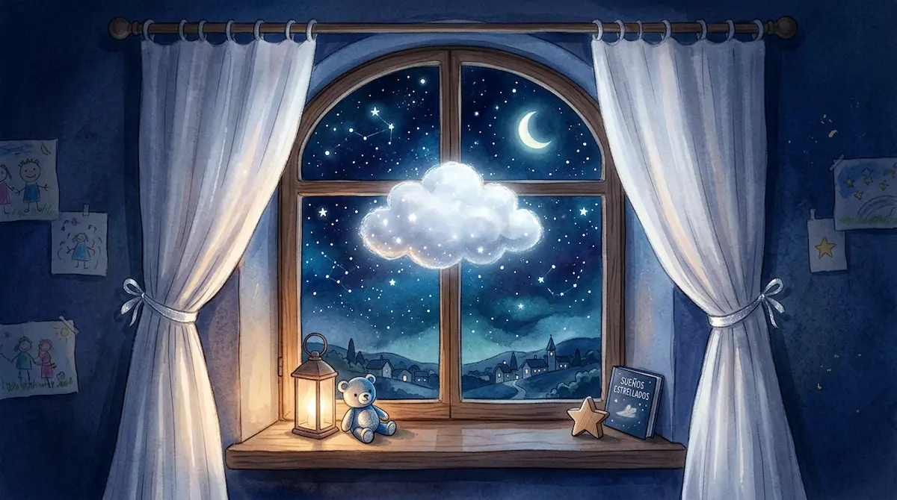
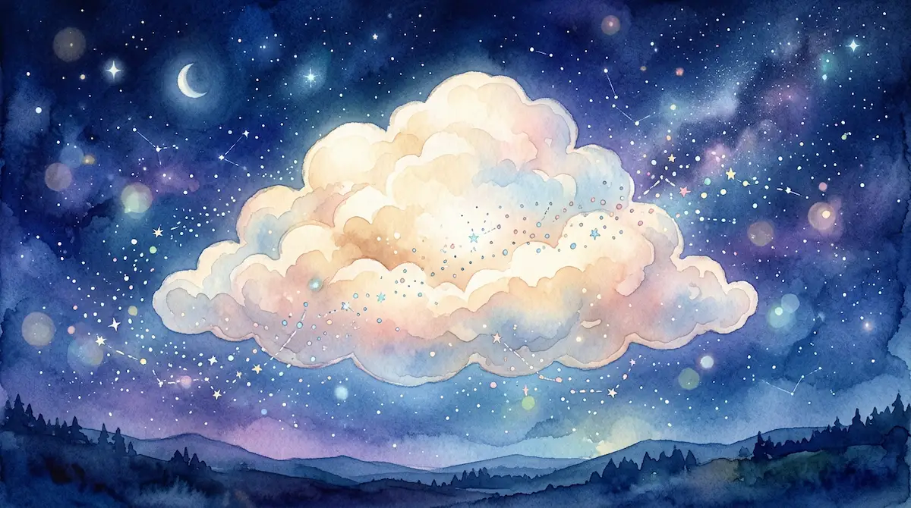
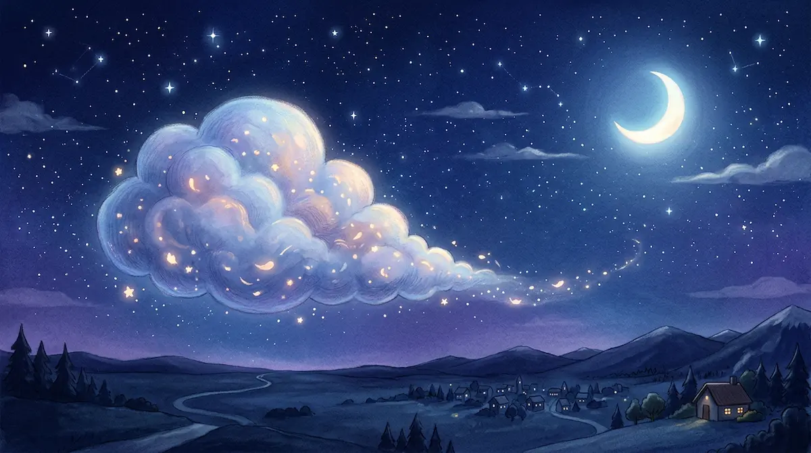

3. La Nube de los Susurros
Hola, mi pequeña gran alma. Ponte muy cómodo, como si estuvieras envuelto en el abrazo más suave del mundo. Cierra los ojos lentamente, como si bajaras las persianas de una casita para que entre la paz.

Imagina que, justo afuera de tu ventana, flota una pequeña nube. Es blanca, esponjosa y brilla con una luz plateada muy tenue. Esta no es una nube cualquiera; es la Nube de los Susurros. Ha venido hoy solo para acompañarte, porque sabe que tu mente ha estado muy ocupada trabajando todo el día. Mírala con los ojos de tu imaginación. Se mueve despacio, balanceándose al ritmo de la brisa. Es segura, es amable y está aquí para cuidar de tu descanso.
La respiración de nube
Antes de hablar con ella, vamos a preparar nuestro cuerpo. Pon tus manos suavemente sobre tu barriga, justo encima del ombligo. Imagina que tu barriguita es parte de esa nube. Al inspirar aire por la nariz, siente cómo tus manos suben porque tu barriga se infla, redonda y suave como una nube llena de luz. Mantén ese aire un segundito, sintiendo la calma.
Ahora, expulsa el aire muy despacio por la boca, como si soplaras una pluma sin querer que se aleje demasiado. Siente cómo tu barriga se desinfla y tus manos bajan. Tu cuerpo se vuelve más pesado, hundiéndose en la suavidad de tu cama. Hagámoslo una vez más. Inspira, infla tu nube interna, y suelta, vaciando toda la tensión.
El vaciado de emociones
Ahora que tu cuerpo está tranquilo, es momento de vaciar tu mochila emocional. La Nube de los Susurros es como una esponja mágica que puede absorber todo lo que viviste hoy. Acércate a ella en tu imaginación y cuéntale tu día. Puedes decírselo en un susurro o simplemente pensarlo. Cuéntale tus juegos, las risas que compartiste y lo que más te gustó.
Pero también, valida lo que te dolió. Si hubo un momento en que te sentiste enfadado, si algo te dio miedo o si te sentiste un poquito triste, cuéntaselo también. No te guardes nada. Todas tus emociones son importantes y aquí están a salvo. La nube escucha sin juzgar. Mira cómo, mientras le hablas, ella va absorbiendo cada palabra y cada recuerdo, dejando tu mente limpia y despejada, como un cielo azul después de la lluvia.

Mira a la nube ahora. Se ha vuelto un poquito más grande y pesada, porque ha guardado con mucho amor todas tus vivencias del día. Ya no tienes que cargarlas tú; ella las cuidará por ti. Despacio, la Nube de los Susurros empieza a alejarse. La ves flotar hacia el horizonte, llevándose el día lejos, muy lejos. Se va hacia el lugar donde nacen los sueños, permitiendo que tu habitación se llene de un silencio protector y dulce.

Tu mente ahora es un espacio vasto, vacío y en paz. Estás listo para el taller del sueño, donde tu cerebro fabricará tu mañana mientras descansas profundamente. Recuerda que eres valiente, eres especial y estás seguro. Mañana despertarás lleno de energía nueva, pero ahora, solo disfruta de este peso agradable en tus músculos. La Nube de los Susurros volverá siempre que la necesites. Descansa, pequeño explorador. Buenas noches.